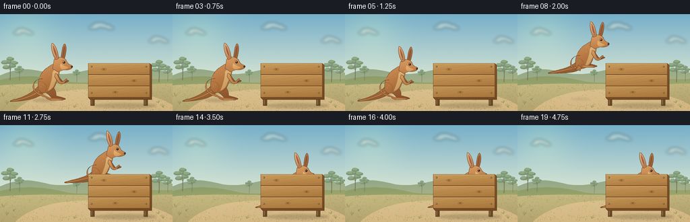
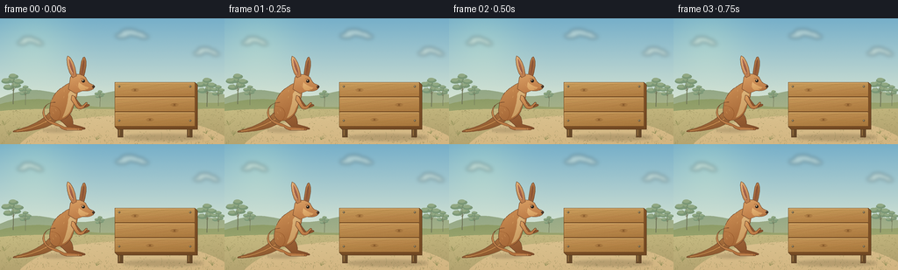

CODING AGENTS AS PIXEL WORLD MODELS
traex/GPT-6.1-Sol · dynamic_spatial_relationship_0034
点击播放 · 原生 RGB 像素
逐轮保存的候选
回放视频、检查图与代码变化。
每份候选均可单独播放。实际图片检查记录在下方工具轨迹中。
候选 01播放与检查图
点击播放 · 原生 RGB 像素


展开代码变化
--- 上一保存版本
+++ 本次保存版本
@@ -0,0 +1,210 @@
+from pathlib import Path
+import math
+import numpy as np
+from PIL import Image, ImageDraw, ImageFilter
+import artifact_io
+
+ROOT = Path(__file__).resolve().parent
+W,H,S=256,144,4
+
+def bezier_path(commands):
+ pts=[]; p=(0,0); start=None
+ for cmd in commands:
+ if cmd[0]=='M':
+ p=cmd[1:]; start=p; pts.append(p)
+ elif cmd[0]=='L':
+ p=cmd[1:]; pts.append(p)
+ elif cmd[0]=='C':
+ a=p; b=cmd[1:3]; c=cmd[3:5]; e=cmd[5:7]
+ for t in np.linspace(0,1,22)[1:]:
+ q=1-t; pts.append((q*q*q*a[0]+3*q*q*t*b[0]+3*q*t*t*c[0]+t*t*t*e[0],q*q*q*a[1]+3*q*q*t*b[1]+3*q*t*t*c[1]+t*t*t*e[1]))
+ p=e
+ elif cmd[0]=='Q':
+ a=p;b=cmd[1:3];e=cmd[3:5]
+ for t in np.linspace(0,1,16)[1:]:
+ q=1-t;pts.append((q*q*a[0]+2*q*t*b[0]+t*t*e[0],q*q*a[1]+2*q*t*b[1]+t*t*e[1]))
+ p=e
+ elif cmd[0]=='Z':pts.append(start)
+ return pts
+
+def xy(points):return [(int(x*S),int(y*S)) for x,y in points]
+def line(im,pts,fill,width=1): ImageDraw.Draw(im).line(xy(pts),fill=fill,width=max(1,int(width*S)),joint='curve')
+def ellipse(im,box,fill,outline=None,width=1):
+ ImageDraw.Draw(im).ellipse(tuple(int(v*S) for v in box),fill=fill,outline=outline,width=max(1,int(width*S)))
+
+def shape(im,pts,top,bottom,outline=(91,58,35),width=.55,seed=1,texture=1.4):
+ # Smooth directional pigment shading, confined exactly to each hand-shaped silhouette.
+ xs,ys=zip(*pts); x0=max(0,int(min(xs)*S)-3);x1=min(W*S,int(max(xs)*S)+4);y0=max(0,int(min(ys)*S)-3);y1=min(H*S,int(max(ys)*S)+4)
+ if x1<=x0 or y1<=y0:return
+ mask=Image.new('L',(x1-x0,y1-y0));d=ImageDraw.Draw(mask)
+ local=[(x*S-x0,y*S-y0) for x,y in pts];d.polygon(local,fill=255)
+ yy,xx=np.mgrid[0:y1-y0,0:x1-x0];u=xx/max(1,x1-x0);v=yy/max(1,y1-y0)
+ blend=np.clip(.72*v+.24*u,0,1)[...,None]
+ arr=np.array(top)*(1-blend)+np.array(bottom)*blend
+ rng=np.random.default_rng(seed);arr+=rng.normal(0,texture,arr.shape[:2])[...,None]
+ im.paste(Image.fromarray(np.uint8(np.clip(arr,0,255))), (x0,y0),mask)
+ if outline is not None:line(im,pts+[pts[0]],outline,width)
+
+def path(im,commands,top,bottom,outline=(91,58,35),width=.55,seed=1):
+ shape(im,bezier_path(commands),top,bottom,outline,width,seed)
+
+# Static, sunlit Australian paddock. All geometry is drawn locally, without assets.
+def make_background():
+ yy,xx=np.mgrid[0:H*S,0:W*S];y=yy/S
+ f=np.clip(y/102,0,1)[...,None]
+ sky=np.array([118,175,201])*(1-f)+np.array([222,232,212])*f
+ glow=np.exp(-((xx/S-39)**2+(y-23)**2)/1700)[...,None]
+ sky=sky+glow*np.array([17,14,1])
+ rng=np.random.default_rng(21);sky+=rng.normal(0,.5,sky.shape[:2])[...,None]
+ im=Image.fromarray(np.uint8(np.clip(sky,0,255)))
+ clouds=Image.new('RGBA',im.size)
+ for x,y,w in [(35,27,27),(151,19,34),(236,39,27)]:
+ for dx,dy,r in [(-.35*w,1,.22*w),(-.1*w,-3,.29*w),(.17*w,-1,.23*w),(.38*w,2,.17*w)]:
+ ellipse(clouds,(x+dx-r,y+dy-r*.36,x+dx+r,y+dy+r*.36),(248,247,225,90))
+ clouds=clouds.filter(ImageFilter.GaussianBlur(2.2*S));im=Image.alpha_composite(im.convert('RGBA'),clouds).convert('RGB')
+ path(im,[('M',0,91),('C',32,78,45,81,75,88),('C',111,94,134,76,161,83),('C',190,89,221,78,256,87),('L',256,111),('L',0,111),('Z',)],(145,167,135),(177,182,137),None)
+ path(im,[('M',0,98),('C',38,88,70,93,100,100),('C',151,107,179,89,214,95),('C',238,98,245,97,256,96),('L',256,118),('L',0,118),('Z',)],(139,155,102),(171,173,117),None)
+ # Small distant trees, with airy eucalyptus silhouettes.
+ for tx,ty,sc in [(15,93,.74),(29,94,.43),(114,96,.34),(236,96,.7),(249,95,.46)]:
+ line(im,[(tx,ty+5),(tx+1*sc,ty-19*sc),(tx-1*sc,ty-28*sc)],(111,116,87),1.6*sc)
+ for dx,dy in [(-7,-19),(5,-22),(-3,-30),(9,-28),(-10,-29),(1,-36)]:
+ line(im,[(tx,ty-13*sc),(tx+dx*sc,ty+dy*sc)],(111,116,87),.65*sc)
+ ellipse(im,(tx+(dx-8)*sc,ty+(dy-3)*sc,tx+(dx+7)*sc,ty+(dy+4)*sc),(122,151,118))
+ ellipse(im,(tx+(dx-7)*sc,ty+(dy-4)*sc,tx+(dx+4)*sc,ty+(dy+1)*sc),(145,168,131))
+ # Ground has a warm dusty clearing and scrub around its edge.
+ path(im,[('M',0,106),('C',65,100,138,107,256,103),('L',256,144),('L',0,144),('Z',)],(199,188,131),(173,155,105),None)
+ path(im,[('M',22,144),('C',53,116,96,112,142,111),('C',181,110,235,121,256,135),('L',256,144),('Z',)],(218,194,143),(210,180,128),None)
+ for i in range(1100):
+ x=rng.uniform(0,256); y=rng.uniform(104,144)
+ col=tuple(int(v) for v in (np.array([150,141,91])+rng.uniform(-15,25)))
+ if 39<x<222 and 115<y<135 and rng.random()<.76:continue
+ if rng.random()<.69:
+ line(im,[(x,y),(x+rng.uniform(-1.8,1.8),y-rng.uniform(.6,3)*(y-95)/45)],col,.25)
+ else:
+ ellipse(im,(x,y,x+rng.uniform(.3,.9),y+.23),col)
+ # Foreground grass clumps anchor the space without distracting from the action.
+ for x,y in [(10,134),(20,128),(235,132),(242,139),(110,139),(5,122)]:
+ for j in range(8):
+ h=rng.uniform(2,6);dx=rng.uniform(-4,4)
+ line(im,[(x,y),(x+dx*.6,y-h*.7),(x+dx,y-h)],(113+j*5,124+j*3,67+j*3),.38)
+ return im
+
+BG=make_background()
+
+def shadow(im,cx,cy,rx,ry,alpha=55):
+ lay=Image.new('RGBA',im.size)
+ ellipse(lay,(cx-rx,cy-ry,cx+rx,cy+ry),(76,63,38,int(alpha)))
+ lay=lay.filter(ImageFilter.GaussianBlur(1.45*S))
+ im.paste(Image.alpha_composite(im.convert('RGBA'),lay).convert('RGB'))
+
+# A wide, freestanding wooden board stands closer to the camera than the animal.
+def draw_board(im):
+ shadow(im,186,136,46,3.5,57)
+ for x in [137,216]:
+ shape(im,[(x-2.5,78),(x+3,78),(x+3,136),(x-2.5,136)],(150,112,62),(92,64,36),(89,59,35),.5,seed=int(x))
+ line(im,[(x-1,125),(x-1,134)],(191,145,82),.5)
+ # thickness on right and bottom edge
+ shape(im,[(131,73),(222,73),(225,76),(225,127),(134,127),(131,124)],(138,89,43),(112,71,34),(87,57,30),.6)
+ for j in range(3):
+ y=73+j*17
+ shape(im,[(131,y),(222,y),(222,y+16.6),(131,y+16.6)],(211-j*4,167-j*5,101-j*4),(170-j*3,117-j*2,59-j*2),(116,77,37),.55,seed=75+j,texture=2.1)
+ line(im,[(132,y+.6),(221,y+.6)],(233,192,127),.6)
+ # Organic longitudinal wood grain, no printed marks.
+ rng=np.random.default_rng(100+j)
+ for k in range(11):
+ gy=y+1.8+k*1.24
+ pts=[(xx,gy+.26*math.sin(xx*.115+k)+.15*math.sin(xx*.28+k*2)) for xx in np.linspace(132,221,100)]
+ line(im,pts,(158+int(rng.uniform(-5,16)),109+int(rng.uniform(0,14)),55+int(rng.uniform(0,10))),.18)
+ for kx,ky in [(154,82),(199,99),(171,116)]:
+ for rx,ry in [(4.2,1.65),(2.8,1.1),(1.6,.6)]:
+ ellipse(im,(kx-rx,ky-ry,kx+rx,ky+ry),None,(130,84,39),.23)
+ ellipse(im,(kx-.8,ky-.37,kx+.8,ky+.37),(120,78,37))
+ for x in [136,217]:
+ for y in [78,117]:
+ ellipse(im,(x-1.1,y-1.1,x+1.1,y+1.1),(99,84,61),(86,70,49),.25)
+ ellipse(im,(x-.6,y-.65,x+.1,y),(209,199,158))
+
+
+def draw_roo(im,cx,feet,scale,tuck=0,lean=0,breath=0):
+ # Articulated profile, facing right: long tail, muscular haunch, small hands,
+ # elongated muzzle and tall tapered ears distinguish this from a rabbit.
+ def transform(pts):
+ return [(cx+scale*(x+lean*(-y)/85),feet+scale*(y+breath)) for x,y in pts]
+ def part(cmds,top,bottom,out=(105,65,39),wid=.5,seed=5):
+ shape(im,transform(bezier_path(cmds)),top,bottom,out,wid,seed)
+ def stroke(cmds,col,w=.6):line(im,transform(bezier_path(cmds)),col,w)
+ def el(box,col,out=None,w=.5):
+ a=transform([(box[0],box[1]),(box[2],box[3])]);ellipse(im,(*a[0],*a[1]),col,out,w)
+ # Long tapering tail along the ground, lifted as the hind legs fold.
+ lift=tuck*8
+ part([('M',-9,-26),('C',-20,-14,-30,-6-lift,-50,-1-lift),('C',-57,1-lift,-58,2-lift,-53,2-lift),('C',-28,1-lift,-13,-4,-5,-12),('Z',)],(190,130,72),(127,77,40),seed=1)
+ stroke([('M',-13,-13),('C',-28,-4-lift,-43,0-lift,-52,1-lift)],(217,159,91),.8)
+ # Far hind leg and foot, visible beyond the near foot.
+ tx=tuck*9; ty=tuck*18
+ part([('M',-3,-25),('C',8,-24,13,-13,12-tx,-7-ty),('L',23-tx,-4-ty),('Q',28-tx,-2-ty,25-tx,-1-ty),('L',8-tx,-1-ty),('Q',1-tx,-10-ty,-7,-14),('Z',)],(167,106,60),(128,75,39),seed=2)
+ # Torso leaning up into a slender neck.
+ part([('M',-14,-18),('C',-16,-31,-9,-44,0,-49),('C',7,-54,10,-56,14,-53),('C',19,-50,18,-39,13,-30),('C',12,-19,4,-11,-5,-11),('C',-10,-10,-13,-14,-14,-18),('Z',)],(210,149,89),(153,91,46),seed=3)
+ # Cream chest and stomach.
+ part([('M',12,-49),('C',18,-45,15,-34,10,-25),('C',9,-20,5,-16,0,-14),('C',5,-25,7,-35,7,-42),('Z',)],(230,191,133),(191,142,84),None,seed=4)
+ # Far little forearm.
+ part([('M',14,-39),('Q',19,-31,22,-28),('L',29,-30),('Q',33,-29,29,-27),('L',21,-24),('Q',16,-27,12,-34),('Z',)],(165,104,58),(131,75,38),seed=6)
+ # Large rounded thigh and flexible ankle; feet tuck on the leap.
+ part([('M',-8,-32),('C',-20,-32,-24,-22,-18,-14),('C',-15,-10,-9,-9,-6,-8),('L',2-tx,-4-ty),('L',19-tx,-3-ty),('Q',25-tx,-2-ty,22-tx,0-ty),('L',4-tx,0-ty),('Q',-1-tx,-1-ty,-3-tx,-4-ty),('C',-12,-6,-20,-10,-22,-18),('C',-23,-25,-18,-32,-8,-32),('Z',)],(215,153,91),(167,102,54),seed=7)
+ stroke([('M',-13,-28),('C',-4,-28,0,-21,-3,-15),('Q',-5,-10,-9,-10)],(150,88,42),.5)
+ stroke([('M',5-tx,-1-ty),('L',19-tx,-1-ty)],(237,188,124),.55)
+ stroke([('M',17-tx,-2.5-ty),('L',17.4-tx,-.3-ty)],(120,77,46),.35)
+ stroke([('M',20-tx,-2.2-ty),('L',20.3-tx,-.5-ty)],(120,77,46),.35)
+ # Near arm with tiny dark fingers.
+ part([('M',11,-40),('C',15,-40,15,-34,18,-30),('Q',20,-26,24,-29),('L',27,-32),('Q',29,-32,28,-30),('L',25,-26),('Q',20,-22,16,-26),('L',10,-35),('Z',)],(222,161,99),(176,110,59),seed=8)
+ stroke([('M',25,-27),('L',28,-30)],(108,65,39),.55)
+ # Far ear, then neck and head.
+ part([('M',19,-57),('C',20,-66,21,-82,25,-84),('C',29,-80,27,-67,23,-58),('Z',)],(193,133,80),(133,79,45),seed=9)
+ part([('M',21,-61),('C',22,-69,23,-79,25,-81),('C',26,-75,24,-65,22,-61),('Z',)],(127,79,53),(160,95,58),None,seed=10)
+ part([('M',7,-47),('L',9,-59),('C',10,-65,20,-66,26,-61),('C',28,-59,28,-55,33,-53),('Q',39,-51,35,-47),('Q',31,-44,23,-45),('L',15,-42),('Z',)],(219,162,102),(179,111,61),seed=11)
+ # Near ear: a narrow, lengthy leaf shape with warm inner fur.
+ part([('M',12,-60),('C',8,-65,4,-77,6,-85),('C',11,-84,16,-70,16,-62),('Z',)],(227,177,117),(180,113,68),seed=12)
+ part([('M',12,-64),('C',9,-69,7,-79,7.5,-82),('C',11,-77,13,-68,13,-64),('Z',)],(177,112,87),(145,84,63),None,seed=13)
+ stroke([('M',6.8,-83),('C',7,-76,9,-69,12,-65)],(246,205,148),.6)
+ # Cheek, bright eye, nostril and dark velvet nose.
+ part([('M',19,-55),('Q',23,-51,30,-49),('Q',29,-45,21,-46),('Q',17,-48,19,-55),('Z',)],(232,184,121),(208,149,87),None,seed=14)
+ el((22,-58,25.8,-54.6),(76,49,33))
+ el((23,-57.6,25.3,-55),(29,26,22))
+ el((23.1,-57.4,24,-56.5),(255,239,194))
+ stroke([('M',21,-59),('Q',23,-60,26,-58)],(156,96,52),.5)
+ el((34,-51.5,37,-48.4),(66,47,35))
+ el((34.2,-51.2,35.4,-50.4),(138,113,85))
+ stroke([('M',35,-47.9),('Q',29,-46,26,-47)],(113,71,40),.45)
+ # Fine, directed fur marks, fixed to the animal rather than to the screen.
+ for x,y,dx,dy in [(-10,-41,-1,3),(-6,-44,-1,2),(-12,-35,-1,3),(-16,-25,-.2,2),(-18,-20,1,2),(-14,-18,1,2),(-11,-21,1,2),(-8,-24,1,2),(2,-46,0,2),(2,-39,-.3,2),(16,-52,1,1),(17,-50,1,1)]:
+ line(im,transform([(x,y),(x+dx,y+dy)]),(231,179,115),.3)
+
+
+def frame(i):
+ im=BG.copy()
+ if i<=3:
+ cx=71;feet=128;sc=1;tuck=0;lean=0;breath=.25*math.sin(i*1.7)
+ elif i<=5:
+ p=(i-3)/2
+ cx=71+p*.6;feet=128;sc=1-p*.055;tuck=.05;lean=3*p;breath=0
+ elif i<=14:
+ t=(i-5)/9
+ smooth=t*t*(3-2*t)
+ cx=71.6+104.4*smooth
+ feet=128-7*t-39*math.sin(math.pi*t)
+ sc=.945+.01*math.sin(math.pi*t)
+ tuck=math.sin(math.pi*t)**1.2*.87
+ lean=5*math.sin(math.pi*t);breath=0
+ else:
+ cx=176;feet=121+(.9 if i==15 else 0);sc=.945;tuck=0;lean=0;breath=.2*math.sin(i*1.5)
+ # Ground shadow follows the projection, shrinking and softening at the apex.
+ lift=max(0,126-feet)
+ shadow(im,cx-5,128-7*max(0,(cx-71)/105),18-lift*.12,2.4-lift*.022,52-lift*.8)
+ draw_roo(im,cx,feet,sc,tuck,lean,breath)
+ # Constant foreground layer provides real occlusion when the kangaroo moves behind it.
+ draw_board(im)
+ return np.asarray(im.resize((W,H),Image.Resampling.LANCZOS).convert('RGB'),dtype=np.uint8)
+
+if __name__=='__main__':
+ frames=np.stack([frame(i) for i in range(20)])
+ artifact_io.save(frames,ROOT)
+ print('Saved',frames.shape,frames.dtype,'to',ROOT)
可观测工具轨迹
实际执行的命令与返回图片。
命令 1exit 0
/bin/bash -lc 'ls -la && cat prompt.txt && cat GENERATION_RULES.md && cat task_spec.json'
命令 2exit 0
/bin/bash -lc "cat artifact_io.py && python - <<'PY' import importlib.util for m in ['numpy','PIL','scipy']: print(m, bool(importlib.util.find_spec(m))) PY"
命令 3exit 0
/bin/bash -lc "cat > generate.py <<'PY'
from pathlib import Path
import math
import numpy as np
from PIL import Image, ImageDraw, ImageFilter
import artifact_io
ROOT = Path(__file__).resolve().parent
W,H,S=256,144,4
def bezier_path(commands):
pts=[]; p=(0,0); start=None
for cmd in commands:
if cmd[0]=='M':
p=cmd[1:]; start=p; pts.append(p)
elif cmd[0]=='L':
p=cmd[1:]; pts.append(p)
elif cmd[0]=='C':
a=p; b=cmd[1:3]; c=cmd[3:5]; e=cmd[5:7]
for t in np.linspace(0,1,22)[1:]:
q=1-t; pts.append((q*q*q*a[0]+3*q*q*t*b[0]+3*q*t*t*c[0]+t*t*t*e[0],q*q*q*a[1]+3*q*q*t*b[1]+3*q*t*t*c[1]+t*t*t*e[1]))
p=e
elif cmd[0]=='Q':
a=p;b=cmd[1:3];e=cmd[3:5]
for t in np.linspace(0,1,16)[1:]:
q=1-t;pts.append((q*q*a[0]+2*q*t*b[0]+t*t*e[0],q*q*a[1]+2*q*t*b[1]+t*t*e[1]))
p=e
elif cmd[0]=='Z':pts.append(start)
return pts
def xy(points):return [(int(x*S),int(y*S)) for x,y in points]
def line(im,pts,fill,width=1): ImageDraw.Draw(im).line(xy(pts),fill=fill,width=max(1,int(width*S)),joint='curve')
def ellipse(im,box,fill,outline=None,width=1):
ImageDraw.Draw(im).ellipse(tuple(int(v*S) for v in box),fill=fill,outline=outline,width=max(1,int(width*S)))
def shape(im,pts,top,bottom,outline=(91,58,35),width=.55,seed=1,texture=1.4):
# Smooth directional pigment shading, confined exactly to each hand-shaped silhouette.
xs,ys=zip(*pts); x0=max(0,int(min(xs)*S)-3);x1=min(W*S,int(max(xs)*S)+4);y0=max(0,int(min(ys)*S)-3);y1=min(H*S,int(max(ys)*S)+4)
if x1<=x0 or y1<=y0:return
mask=Image.new('L',(x1-x0,y1-y0));d=ImageDraw.Draw(mask)
local=[(x*S-x0,y*S-y0) for x,y in pts];d.polygon(local,fill=255)
yy,xx=np.mgrid[0:y1-y0,0:x1-x0];u=xx/max(1,x1-x0);v=yy/max(1,y1-y0)
blend=np.clip(.72*v+.24*u,0,1)[...,None]
arr=np.array(top)*(1-blend)+np.array(bottom)*blend
rng=np.random.default_rng(seed);arr+=rng.normal(0,texture,arr.shape[:2])[...,None]
im.paste(Image.fromarray(np.uint8(np.clip(arr,0,255))), (x0,y0),mask)
if outline is not None:line(im,pts+[pts[0]],outline,width)
def path(im,commands,top,bottom,outline=(91,58,35),width=.55,seed=1):
shape(im,bezier_path(commands),top,bottom,outline,width,seed)
# Static, sunlit Australian paddock. All geometry is drawn locally, without assets.
def make_background():
yy,xx=np.mgrid[0:H*S,0:W*S];y=yy/S
f=np.clip(y/102,0,1)[...,None]
sky=np.array([118,175,201])*(1-f)+np.array([222,232,212])*f
glow=np.exp(-((xx/S-39)**2+(y-23)**2)/1700)[...,None]
sky=sky+glow*np.array([17,14,1])
rng=np.random.default_rng(21);sky+=rng.normal(0,.5,sky.shape[:2])[...,None]
im=Image.fromarray(np.uint8(np.clip(sky,0,255)))
clouds=Image.new('RGBA',im.size)
for x,y,w in [(35,27,27),(151,19,34),(236,39,27)]:
for dx,dy,r in [(-.35*w,1,.22*w),(-.1*w,-3,.29*w),(.17*w,-1,.23*w),(.38*w,2,.17*w)]:
ellipse(clouds,(x+dx-r,y+dy-r*.36,x+dx+r,y+dy+r*.36),(248,247,225,90))
clouds=clouds.filter(ImageFilter.GaussianBlur(2.2*S));im=Image.alpha_composite(im.convert('RGBA'),clouds).convert('RGB')
path(im,[('M',0,91),('C',32,78,45,81,75,88),('C',111,94,134,76,161,83),('C',190,89,221,78,256,87),('L',256,111),('L',0,111),('Z',)],(145,167,135),(177,182,137),None)
path(im,[('M',0,98),('C',38,88,70,93,100,100),('C',151,107,179,89,214,95),('C',238,98,245,97,256,96),('L',256,118),('L',0,118),('Z',)],(139,155,102),(171,173,117),None)
# Small distant trees, with airy eucalyptus silhouettes.
for tx,ty,sc in [(15,93,.74),(29,94,.43),(114,96,.34),(236,96,.7),(249,95,.46)]:
line(im,[(tx,ty+5),(tx+1*sc,ty-19*sc),(tx-1*sc,ty-28*sc)],(111,116,87),1.6*sc)
for dx,dy in [(-7,-19),(5,-22),(-3,-30),(9,-28),(-10,-29),(1,-36)]:
line(im,[(tx,ty-13*sc),(tx+dx*sc,ty+dy*sc)],(111,116,87),.65*sc)
ellipse(im,(tx+(dx-8)*sc,ty+(dy-3)*sc,tx+(dx+7)*sc,ty+(dy+4)*sc),(122,151,118))
ellipse(im,(tx+(dx-7)*sc,ty+(dy-4)*sc,tx+(dx+4)*sc,ty+(dy+1)*sc),(145,168,131))
# Ground has a warm dusty clearing and scrub around its edge.
path(im,[('M',0,106),('C',65,100,138,107,256,103),('L',256,144),('L',0,144),('Z',)],(199,188,131),(173,155,105),None)
path(im,[('M',22,144),('C',53,116,96,112,142,111),('C',181,110,235,121,256,135),('L',256,144),('Z',)],(218,194,143),(210,180,128),None)
for i in range(1100):
x=rng.uniform(0,256); y=rng.uniform(104,144)
col=tuple(int(v) for v in (np.array([150,141,91])+rng.uniform(-15,25)))
if 39<x<222 and 115<y<135 and rng.random()<.76:continue
if rng.random()<.69:
line(im,[(x,y),(x+rng.uniform(-1.8,1.8),y-rng.uniform(.6,3)*(y-95)/45)],col,.25)
else:
ellipse(im,(x,y,x+rng.uniform(.3,.9),y+.23),col)
# Foreground grass clumps anchor the space without distracting from the action.
for x,y in [(10,134),(20,128),(235,132),(242,139),(110,139),(5,122)]:
for j in range(8):
h=rng.uniform(2,6);dx=rng.uniform(-4,4)
line(im,[(x,y),(x+dx*.6,y-h*.7),(x+dx,y-h)],(113+j*5,124+j*3,67+j*3),.38)
return im
BG=make_background()
def shadow(im,cx,cy,rx,ry,alpha=55):
lay=Image.new('RGBA',im.size)
ellipse(lay,(cx-rx,cy-ry,cx+rx,cy+ry),(76,63,38,int(alpha)))
lay=lay.filter(ImageFilter.GaussianBlur(1.45*S))
im.paste(Image.alpha_composite(im.convert('RGBA'),lay).convert('RGB'))
# A wide, freestanding wooden board stands closer to the camera than the animal.
def draw_board(im):
shadow(im,186,136,46,3.5,57)
for x in [137,216]:
shape(im,[(x-2.5,78),(x+3,78),(x+3,136),(x-2.5,136)],(150,112,62),(92,64,36),(89,59,35),.5,seed=int(x))
line(im,[(x-1,125),(x-1,134)],(191,145,82),.5)
# thickness on right and bottom edge
shape(im,[(131,73),(222,73),(225,76),(225,127),(134,127),(131,124)],(138,89,43),(112,71,34),(87,57,30),.6)
for j in range(3):
y=73+j*17
shape(im,[(131,y),(222,y),(222,y+16.6),(131,y+16.6)],(211-j*4,167-j*5,101-j*4),(170-j*3,117-j*2,59-j*2),(116,77,37),.55,seed=75+j,texture=2.1)
line(im,[(132,y+.6),(221,y+.6)],(233,192,127),.6)
# Organic longitudinal wood grain, no printed marks.
rng=np.random.default_rng(100+j)
for k in range(11):
gy=y+1.8+k*1.24
pts=[(xx,gy+.26*math.sin(xx*.115+k)+.15*math.sin(xx*.28+k*2)) for xx in np.linspace(132,221,100)]
line(im,pts,(158+int(rng.uniform(-5,16)),109+int(rng.uniform(0,14)),55+int(rng.uniform(0,10))),.18)
for kx,ky in [(154,82),(199,99),(171,116)]:
for rx,ry in [(4.2,1.65),(2.8,1.1),(1.6,.6)]:
ellipse(im,(kx-rx,ky-ry,kx+rx,ky+ry),None,(130,84,39),.23)
ellipse(im,(kx-.8,ky-.37,kx+.8,ky+.37),(120,78,37))
for x in [136,217]:
for y in [78,117]:
ellipse(im,(x-1.1,y-1.1,x+1.1,y+1.1),(99,84,61),(86,70,49),.25)
ellipse(im,(x-.6,y-.65,x+.1,y),(209,199,158))
def draw_roo(im,cx,feet,scale,tuck=0,lean=0,breath=0):
# Articulated profile, facing right: long tail, muscular haunch, small hands,
# elongated muzzle and tall tapered ears distinguish this from a rabbit.
def transform(pts):
return [(cx+scale*(x+lean*(-y)/85),feet+scale*(y+breath)) for x,y in pts]
def part(cmds,top,bottom,out=(105,65,39),wid=.5,seed=5):
shape(im,transform(bezier_path(cmds)),top,bottom,out,wid,seed)
def stroke(cmds,col,w=.6):line(im,transform(bezier_path(cmds)),col,w)
def el(box,col,out=None,w=.5):
a=transform([(box[0],box[1]),(box[2],box[3])]);ellipse(im,(*a[0],*a[1]),col,out,w)
# Long tapering tail along the ground, lifted as the hind legs fold.
lift=tuck*8
part([('M',-9,-26),('C',-20,-14,-30,-6-lift,-50,-1-lift),('C',-57,1-lift,-58,2-lift,-53,2-lift),('C',-28,1-lift,-13,-4,-5,-12),('Z',)],(190,130,72),(127,77,40),seed=1)
stroke([('M',-13,-13),('C',-28,-4-lift,-43,0-lift,-52,1-lift)],(217,159,91),.8)
# Far hind leg and foot, visible beyond the near foot.
tx=tuck*9; ty=tuck*18
part([('M',-3,-25),('C',8,-24,13,-13,12-tx,-7-ty),('L',23-tx,-4-ty),('Q',28-tx,-2-ty,25-tx,-1-ty),('L',8-tx,-1-ty),('Q',1-tx,-10-ty,-7,-14),('Z',)],(167,106,60),(128,75,39),seed=2)
# Torso leaning up into a slender neck.
part([('M',-14,-18),('C',-16,-31,-9,-44,0,-49),('C',7,-54,10,-56,14,-53),('C',19,-50,18,-39,13,-30),('C',12,-19,4,-11,-5,-11),('C',-10,-10,-13,-14,-14,-18),('Z',)],(210,149,89),(153,91,46),seed=3)
# Cream chest and stomach.
part([('M',12,-49),('C',18,-45,15,-34,10,-25),('C',9,-20,5,-16,0,-14),('C',5,-25,7,-35,7,-42),('Z',)],(230,191,133),(191,142,84),None,seed=4)
# Far little forearm.
part([('M',14,-39),('Q',19,-31,22,-28),('L',29,-30),('Q',33,-29,29,-27),('L',21,-24),('Q',16,-27,12,-34),('Z',)],(165,104,58),(131,75,38),seed=6)
# Large rounded thigh and flexible ankle; feet tuck on the leap.
part([('M',-8,-32),('C',-20,-32,-24,-22,-18,-14),('C',-15,-10,-9,-9,-6,-8),('L',2-tx,-4-ty),('L',19-tx,-3-ty),('Q',25-tx,-2-ty,22-tx,0-ty),('L',4-tx,0-ty),('Q',-1-tx,-1-ty,-3-tx,-4-ty),('C',-12,-6,-20,-10,-22,-18),('C',-23,-25,-18,-32,-8,-32),('Z',)],(215,153,91),(167,102,54),seed=7)
stroke([('M',-13,-28),('C',-4,-28,0,-21,-3,-15),('Q',-5,-10,-9,-10)],(150,88,42),.5)
stroke([('M',5-tx,-1-ty),('L',19-tx,-1-ty)],(237,188,124),.55)
stroke([('M',17-tx,-2.5-ty),('L',17.4-tx,-.3-ty)],(120,77,46),.35)
stroke([('M',20-tx,-2.2-ty),('L',20.3-tx,-.5-ty)],(120,77,46),.35)
# Near arm with tiny dark fingers.
part([('M',11,-40),('C',15,-40,15,-34,18,-30),('Q',20,-26,24,-29),('L',27,-32),('Q',29,-32,28,-30),('L',25,-26),('Q',20,-22,16,-26),('L',10,-35),('Z',)],(222,161,99),(176,110,59),seed=8)
stroke([('M',25,-27),('L',28,-30)],(108,65,39),.55)
# Far ear, then neck and head.
part([('M',19,-57),('C',20,-66,21,-82,25,-84),('C',29,-80,27,-67,23,-58),('Z',)],(193,133,80),(133,79,45),seed=9)
part([('M',21,-61),('C',22,-69,23,-79,25,-81),('C',26,-75,24,-65,22,-61),('Z',)],(127,79,53),(160,95,58),None,seed=10)
part([('M',7,-47),('L',9,-59),('C',10,-65,20,-66,26,-61),('C',28,-59,28,-55,33,-53),('Q',39,-51,35,-47),('Q',31,-44,23,-45),('L',15,-42),('Z',)],(219,162,102),(179,111,61),seed=11)
# Near ear: a narrow, lengthy leaf shape with warm inner fur.
part([('M',12,-60),('C',8,-65,4,-77,6,-85),('C',11,-84,16,-70,16,-62),('Z',)],(227,177,117),(180,113,68),seed=12)
part([('M',12,-64),('C',9,-69,7,-79,7.5,-82),('C',11,-77,13,-68,13,-64),('Z',)],(177,112,87),(145,84,63),None,seed=13)
stroke([('M',6.8,-83),('C',7,-76,9,-69,12,-65)],(246,205,148),.6)
# Cheek, bright eye, nostril and dark velvet nose.
part([('M',19,-55),('Q',23,-51,30,-49),('Q',29,-45,21,-46),('Q',17,-48,19,-55),('Z',)],(232,184,121),(208,149,87),None,seed=14)
el((22,-58,25.8,-54.6),(76,49,33))
el((23,-57.6,25.3,-55),(29,26,22))
el((23.1,-57.4,24,-56.5),(255,239,194))
stroke([('M',21,-59),('Q',23,-60,26,-58)],(156,96,52),.5)
el((34,-51.5,37,-48.4),(66,47,35))
el((34.2,-51.2,35.4,-50.4),(138,113,85))
stroke([('M',35,-47.9),('Q',29,-46,26,-47)],(113,71,40),.45)
# Fine, directed fur marks, fixed to the animal rather than to the screen.
for x,y,dx,dy in [(-10,-41,-1,3),(-6,-44,-1,2),(-12,-35,-1,3),(-16,-25,-.2,2),(-18,-20,1,2),(-14,-18,1,2),(-11,-21,1,2),(-8,-24,1,2),(2,-46,0,2),(2,-39,-.3,2),(16,-52,1,1),(17,-50,1,1)]:
line(im,transform([(x,y),(x+dx,y+dy)]),(231,179,115),.3)
def frame(i):
im=BG.copy()
if i<=3:
cx=71;feet=128;sc=1;tuck=0;lean=0;breath=.25*math.sin(i*1.7)
elif i<=5:
p=(i-3)/2
cx=71+p*.6;feet=128;sc=1-p*.055;tuck=.05;lean=3*p;breath=0
elif i<=14:
t=(i-5)/9
smooth=t*t*(3-2*t)
cx=71.6+104.4*smooth
feet=128-7*t-39*math.sin(math.pi*t)
sc=.945+.01*math.sin(math.pi*t)
tuck=math.sin(math.pi*t)**1.2*.87
lean=5*math.sin(math.pi*t);breath=0
else:
cx=176;feet=121+(.9 if i==15 else 0);sc=.945;tuck=0;lean=0;breath=.2*math.sin(i*1.5)
# Ground shadow follows the projection, shrinking and softening at the apex.
lift=max(0,126-feet)
shadow(im,cx-5,128-7*max(0,(cx-71)/105),18-lift*.12,2.4-lift*.022,52-lift*.8)
draw_roo(im,cx,feet,sc,tuck,lean,breath)
# Constant foreground layer provides real occlusion when the kangaroo moves behind it.
draw_board(im)
return np.asarray(im.resize((W,H),Image.Resampling.LANCZOS).convert('RGB'),dtype=np.uint8)
if __name__=='__main__':
frames=np.stack([frame(i) for i in range(20)])
artifact_io.save(frames,ROOT)
print('Saved',frames.shape,frames.dtype,'to',ROOT)
PY
python generate.py"命令 4exit 0
/bin/bash -lc "python - <<'PY'
from pathlib import Path
import numpy as np
from PIL import Image
p=Path('.')
a=np.load('pixels.npz')['pixels']
assert a.shape==(144,256,20)
fs=sorted(p.glob('frames/*.png'))
assert len(fs)==20
assert all(Image.open(f).mode=='RGB' and Image.open(f).size==(256,144) for f in fs)
for name in ['generate.py','pixels.npz','index.html','inspection.png','transition_check.png']:
q=p/name
assert q.is_file() and q.stat().st_size>0
print('Verified: 20 RGB frames, 256Ã144, 4 fps; all required artifacts exist.')
PY"保存候选 1 份；完成命令 4 次；可验证图片返回 0 张。原始 API 响应与完整日志保留在本地。